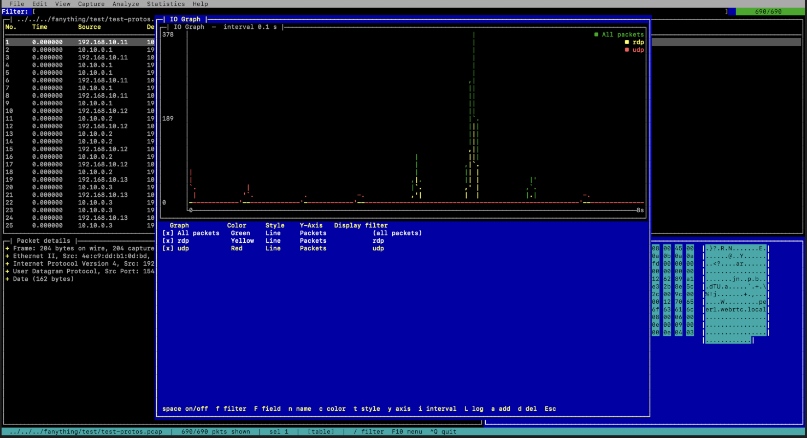

A terminal packet analyzer — a tiny Wireshark for the TUI.

setup.exe installer adds a Start Menu entry and can
associate .pcap / .pcapng files (optional — it won't take them from Wireshark
unless you ask). Prefer no install? The .zip is fully portable: unzip anywhere and run
carcal.exe, keeping the DLLs and the protos\ / grammars\ folders
beside it. Reading capture files is fully supported; live capture is not available on
Windows — capture with Wireshark or dumpcap and open the file here.
Windows Terminal is recommended.
git clone https://github.com/stricaud/carcal cd carcal && mkdir build && cd build cmake .. && make ./carcal /path/to/capture.pcapng